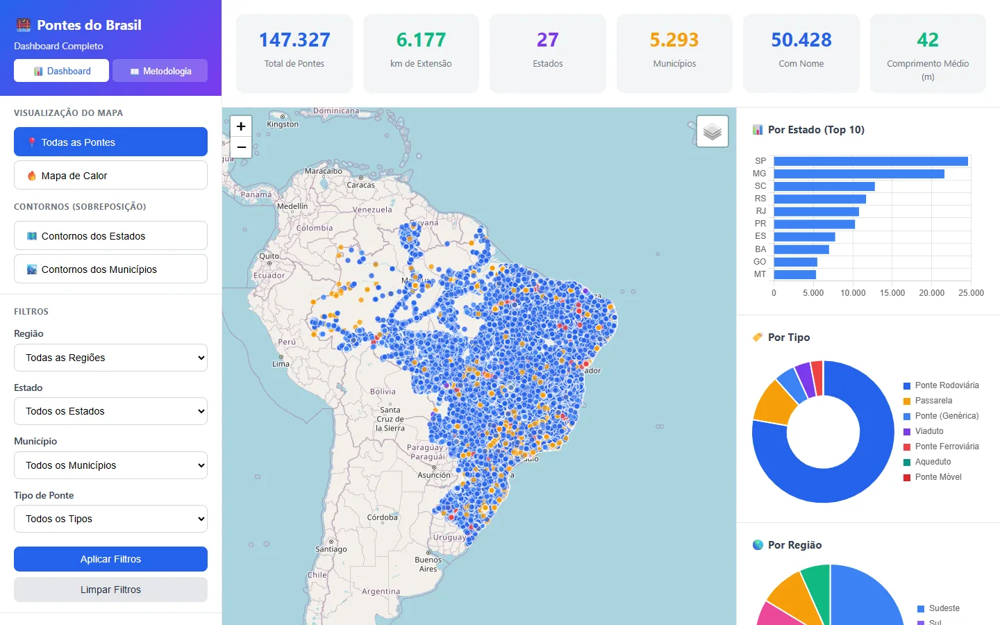
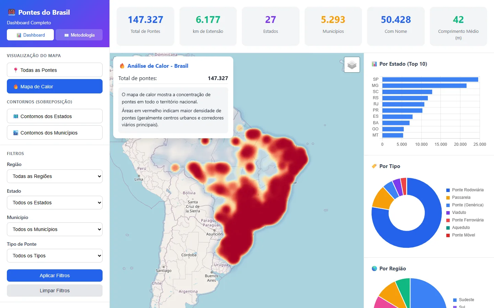
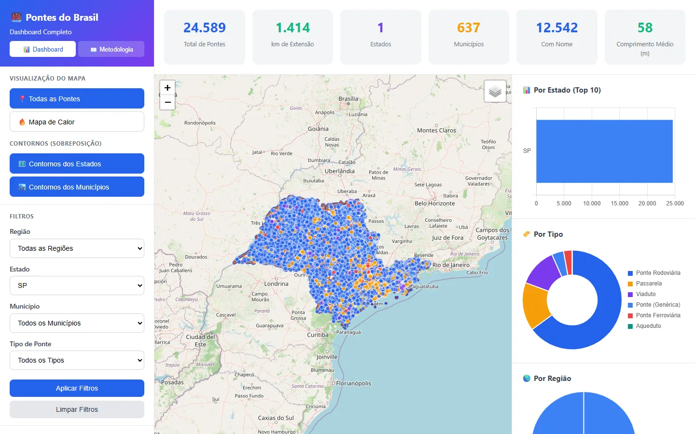
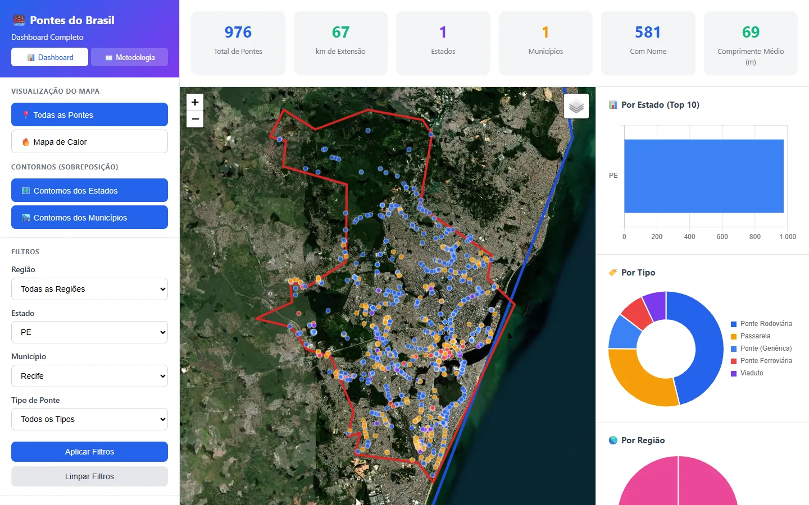
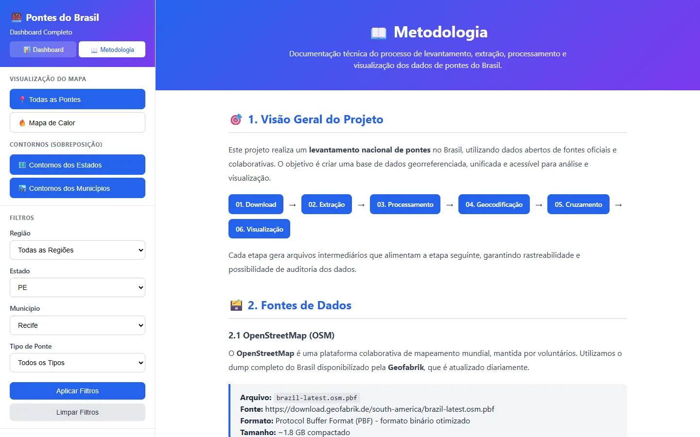

PortfólioTerritório e infraestrutura
Pontes do Brasil
Levantamento nacional das pontes, viadutos e passarelas a partir do OpenStreetMap, com classificação, comprimento e município de cada estrutura. Feito para o CONFEA.
- Instituição
- CONFEA
- Fontes
- OpenStreetMap e malhas do IBGE 2022
- Cobertura
- 27 UFs e 5.293 municípios
- Saída
- Painel e 8 formatos de arquivo
147.327estruturas mapeadas
6.177 kmde extensão somada
41,9 mde comprimento médio
100%localizadas no município
Telas
Capturas do painel gerado pelo pipeline.










Fluxo de páginas
Páginas
Painelmapa, indicadores, gráficos e tabela
Metodologia10 seções de documentação
Mapa
Todas as pontesum ponto por estrutura
Mapa de calordensidade
Contornosestados e municípios
Baseclaro, escuro, OSM ou satélite
Filtros
Região5 regiões
Estado27 UFs
Municípiolista da UF escolhida
Tipo7 tipos
Resultado
Indicadorestotal, km, municípios, com nome
Gráficospor estado, tipo e região
Tabelabusca por nome
Processamento
01 Download
OpenStreetMaparquivo do Brasil, 1,96 GB
IBGE 2022malhas de municípios e UFs
02 Extração
osmiumtags bridge, man_made e building
147.357elementos extraídos
03 Cálculo
Geometriacentroide, comprimento e área
Classestipo e faixa de tamanho
147.327estruturas válidas
04 Localização
Junção espacialmunicípio e UF
100%estruturas localizadas
05 a 07 Saída
Painel HTMLLeaflet e Chart.js
ArquivosKML, KMZ, GeoJSON, Shapefile, GeoPackage, GPX, Excel, CSV
Cada etapa é um script e grava os arquivos da etapa seguinte. A etapa 5 cruza com a base do DNIT quando o arquivo existe.
Estruturas por tipo
Por tamanho
Mediana de 18,6 m e média de 41,9 m. A maior estrutura mede 15,3 km.
Estruturas por faixa de comprimento
Por estado
São Paulo e Minas Gerais concentram 31% das estruturas.
Achados
147.327
estruturas localizadas em 27 UFs
6.177 km
de extensão somada
50.428
estruturas com nome no OpenStreetMap (34%)
3.045
estruturas no município do Rio de Janeiro, o 1º em número
Funcionalidades
- MapaUm ponto por estrutura, com cor por tipo. O clique mostra nome, tipo, comprimento e município.
- DensidadeMapa de calor e índice do vizinho mais próximo para medir a concentração.
- Filtros encadeadosRegião, estado, município e tipo. Indicadores, gráficos e tabela seguem o filtro.
- ArquivosExportação nacional e por estado em 8 formatos, com dicionário de dados.
Limites
- Cobertura do OpenStreetMapA base depende do mapeamento colaborativo. Estruturas não mapeadas ficam de fora.
- DNITOs 4 endereços das Obras de Arte Especiais não responderam na execução. O cruzamento ficou só com o OpenStreetMap.
- DuplicidadeA busca de estruturas sobrepostas existe no código, mas fica desligada por custo de processamento.
Tecnologias
PythonosmiumgeopandasshapelypyprojLeafletChart.js